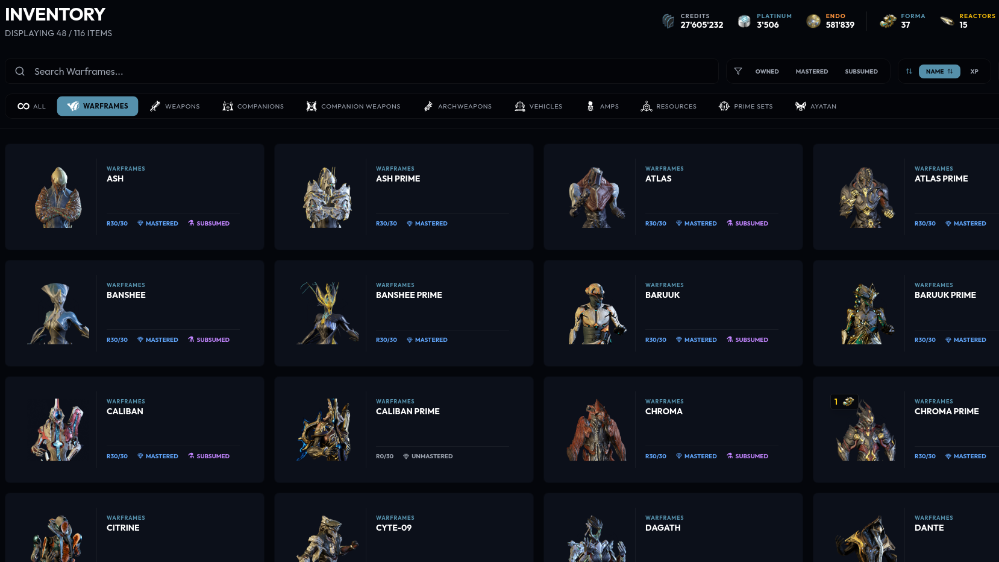
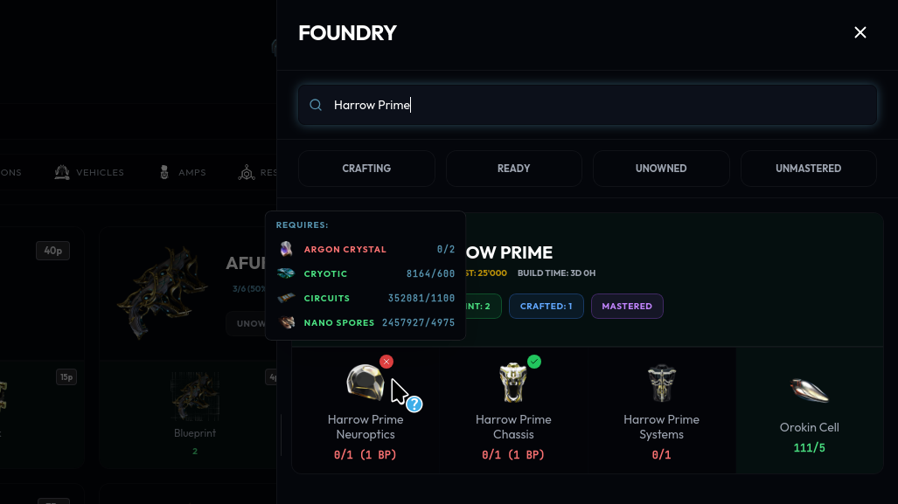
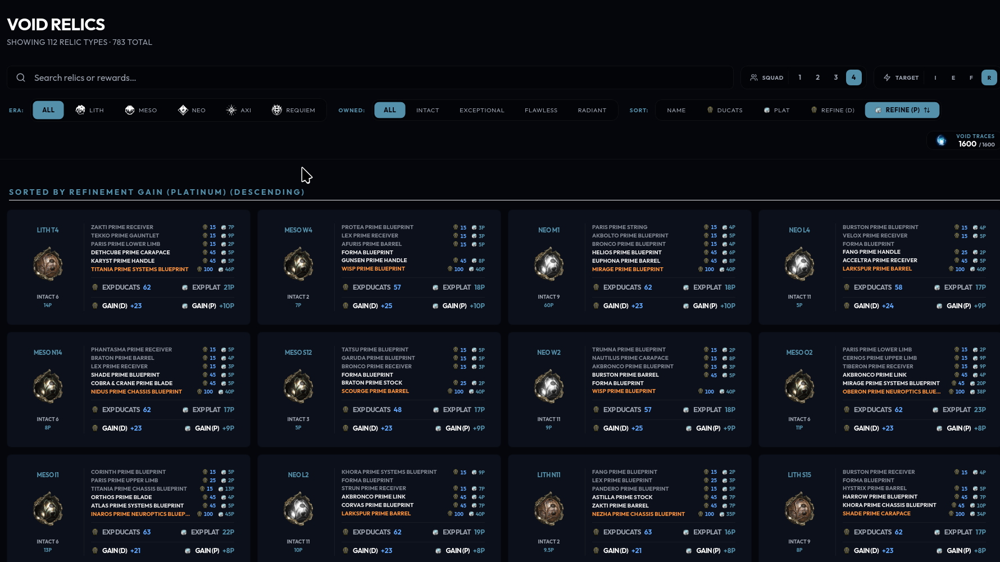
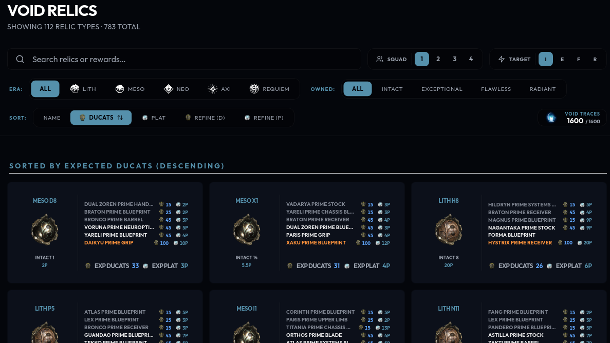
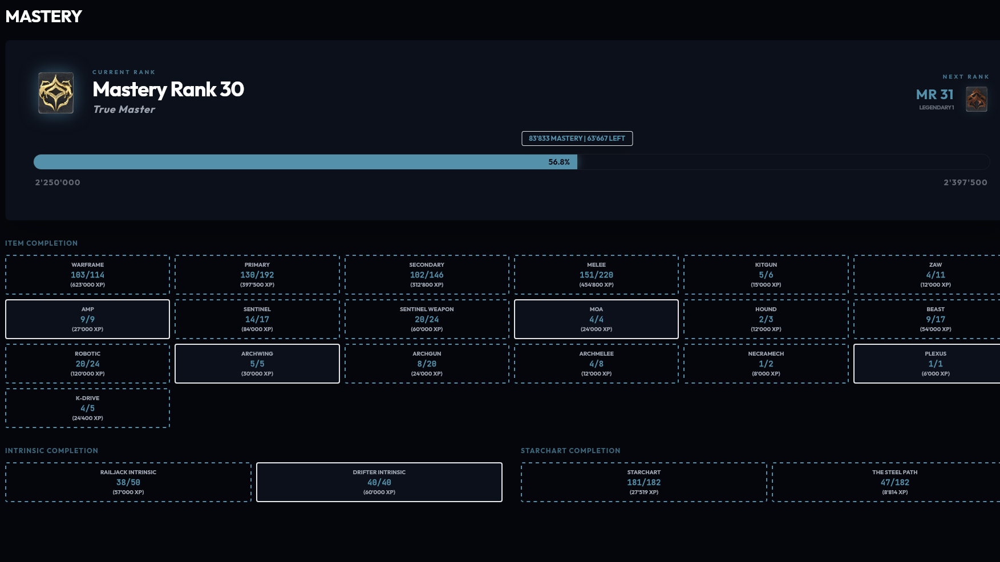
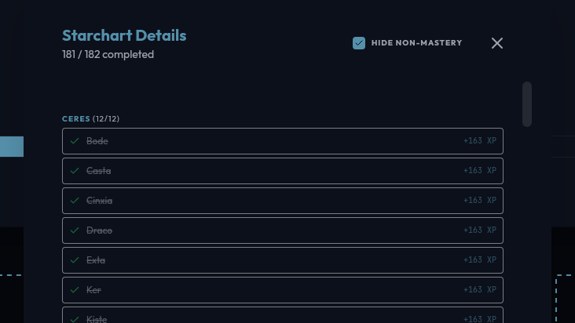
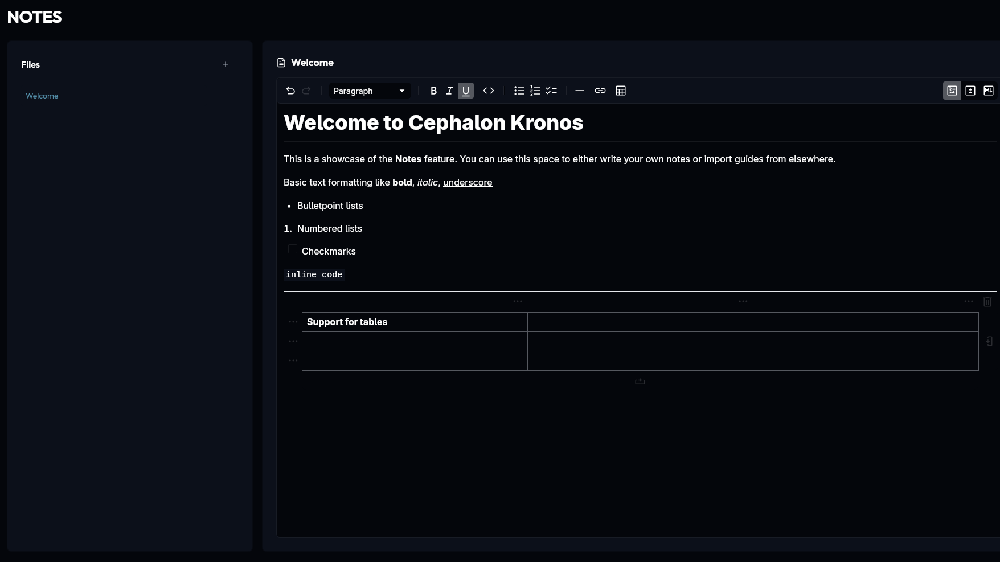
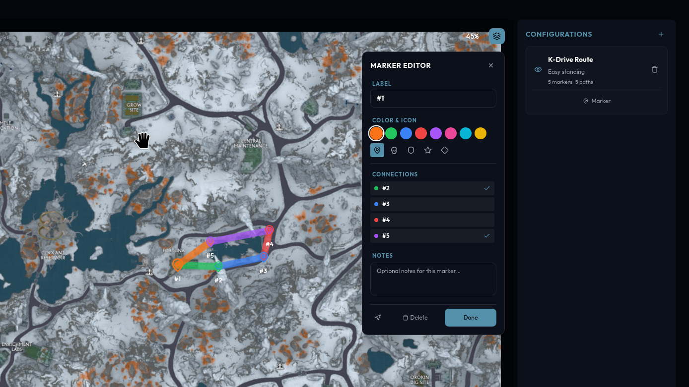
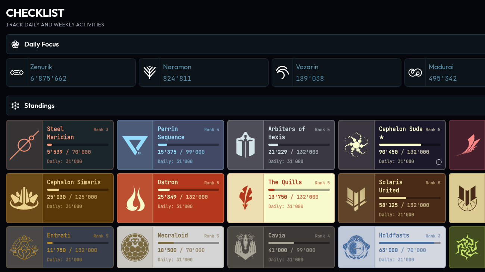

Features (subject to update)
Dashboard
Live world-state data: fissures, sorties, arbitrations, Nightwave, Archon Hunt, Circuit, bounties, 1999 calendar, cycles, Steel Path incursions.

Inventory & Foundry
Search inventory with filters including prime sets. Track blueprints building in your foundry.


Mods
Browse all categories of mods from regular to Parazon, including Antiques and Arcanes and fetch their prices.
Riven Tracker
View owned rivens with neural network price prediction grading, expected value and reroll analysis.


Relic Management
Track owned relics and their priced drops, see which ones profit the most from refinement and sort by radshare efficiency.


Mastery Tracker
MR progress, starchart completion, and mastery XP totals across all categories. Identify items and nodes you haven't gained mastery from yet.


Markdown Notes
Markdown notepad. Notes are saved to your filesystem.

World Maps
Pannable/zoomable maps for Cambion Drift, Orb Vallis, Duviri, and Plains of Eidolon with support for custom routes and markers.


Collectibles
Track your progress with Kuria, somachord, frame fighter fragments, cephalon fragments, Leverian prex cards, and open world exploration.
Checklist & Syndicates
Daily/weekly task tracking, focus school progress and syndicate standings.

Settings & Overlays
Theme picker, monitoring controls, notification, global hotkeys, OCR overlays.